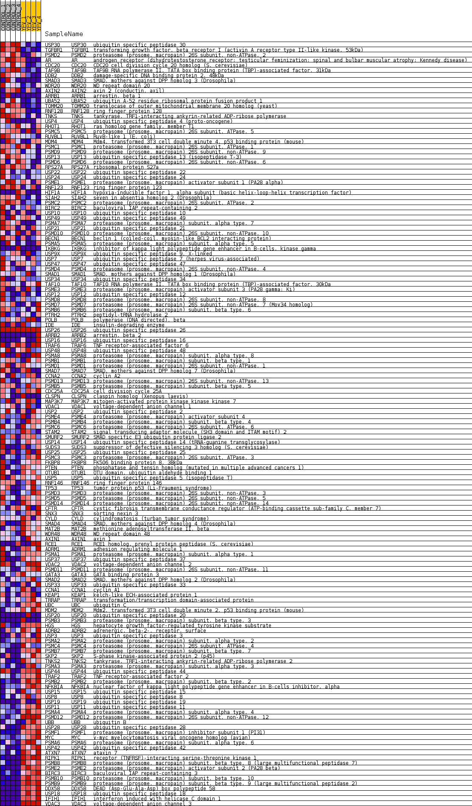
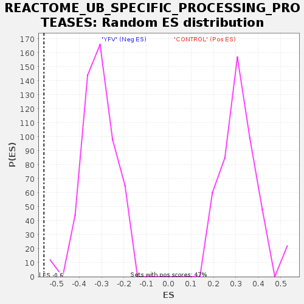

Profile of the Running ES Score & Positions of GeneSet Members on the Rank Ordered List
| Dataset | MATRIZ_GSE99081_collapsed_to_symbols.gsea_CLASE_99081.cls#CONTROL_versus_YFV |
| Phenotype | gsea_CLASE_99081.cls#CONTROL_versus_YFV |
| Upregulated in class | YFV |
| GeneSet | REACTOME_UB_SPECIFIC_PROCESSING_PROTEASES |
| Enrichment Score (ES) | -0.5576195 |
| Normalized Enrichment Score (NES) | -1.7793665 |
| Nominal p-value | 0.0 |
| FDR q-value | 0.026381852 |
| FWER p-Value | 0.194 |
| SYMBOL | TITLE | RANK IN GENE LIST | RANK METRIC SCORE | RUNNING ES | CORE ENRICHMENT | |
|---|---|---|---|---|---|---|
| 1 | USP30 | ubiquitin specific peptidase 30 | 162 | 1.136 | 0.0048 | No |
| 2 | TGFBR1 | transforming growth factor, beta receptor I (activin A receptor type II-like kinase, 53kDa) | 217 | 1.037 | 0.0150 | No |
| 3 | PSMD2 | proteasome (prosome, macropain) 26S subunit, non-ATPase, 2 | 711 | 0.738 | -0.0059 | No |
| 4 | AR | androgen receptor (dihydrotestosterone receptor; testicular feminization; spinal and bulbar muscular atrophy; Kennedy disease) | 813 | 0.699 | -0.0030 | No |
| 5 | CDC20 | CDC20 cell division cycle 20 homolog (S. cerevisiae) | 891 | 0.677 | 0.0011 | No |
| 6 | TAF9B | TAF9B RNA polymerase II, TATA box binding protein (TBP)-associated factor, 31kDa | 973 | 0.650 | 0.0045 | No |
| 7 | DDB2 | damage-specific DNA binding protein 2, 48kDa | 1079 | 0.623 | 0.0062 | No |
| 8 | SMAD3 | SMAD, mothers against DPP homolog 3 (Drosophila) | 1317 | 0.569 | -0.0011 | No |
| 9 | WDR20 | WD repeat domain 20 | 1325 | 0.567 | 0.0059 | No |
| 10 | AXIN2 | axin 2 (conductin, axil) | 1436 | 0.543 | 0.0062 | No |
| 11 | ARRB1 | arrestin, beta 1 | 1868 | 0.499 | -0.0141 | No |
| 12 | UBA52 | ubiquitin A-52 residue ribosomal protein fusion product 1 | 1969 | 0.488 | -0.0139 | No |
| 13 | TOMM20 | translocase of outer mitochondrial membrane 20 homolog (yeast) | 2002 | 0.483 | -0.0095 | No |
| 14 | RNF128 | ring finger protein 128 | 2103 | 0.468 | -0.0096 | No |
| 15 | TNKS | tankyrase, TRF1-interacting ankyrin-related ADP-ribose polymerase | 2461 | 0.418 | -0.0263 | No |
| 16 | USP4 | ubiquitin specific peptidase 4 (proto-oncogene) | 2640 | 0.392 | -0.0323 | No |
| 17 | RHOT1 | ras homolog gene family, member T1 | 2827 | 0.363 | -0.0391 | No |
| 18 | PSMC5 | proteasome (prosome, macropain) 26S subunit, ATPase, 5 | 3127 | 0.329 | -0.0533 | No |
| 19 | RUVBL1 | RuvB-like 1 (E. coli) | 3414 | 0.298 | -0.0672 | No |
| 20 | MDM4 | Mdm4, transformed 3T3 cell double minute 4, p53 binding protein (mouse) | 3483 | 0.291 | -0.0676 | No |
| 21 | PSMC1 | proteasome (prosome, macropain) 26S subunit, ATPase, 1 | 3697 | 0.267 | -0.0774 | No |
| 22 | PSMD9 | proteasome (prosome, macropain) 26S subunit, non-ATPase, 9 | 3732 | 0.263 | -0.0760 | No |
| 23 | USP13 | ubiquitin specific peptidase 13 (isopeptidase T-3) | 3965 | 0.245 | -0.0872 | No |
| 24 | PSMD6 | proteasome (prosome, macropain) 26S subunit, non-ATPase, 6 | 3986 | 0.243 | -0.0853 | No |
| 25 | RPS27A | ribosomal protein S27a | 4134 | 0.232 | -0.0914 | No |
| 26 | USP22 | ubiquitin specific peptidase 22 | 4200 | 0.227 | -0.0924 | No |
| 27 | USP24 | ubiquitin specific peptidase 24 | 4310 | 0.219 | -0.0964 | No |
| 28 | PSME1 | proteasome (prosome, macropain) activator subunit 1 (PA28 alpha) | 4391 | 0.212 | -0.0985 | No |
| 29 | RNF123 | ring finger protein 123 | 4445 | 0.207 | -0.0991 | No |
| 30 | HIF1A | hypoxia-inducible factor 1, alpha subunit (basic helix-loop-helix transcription factor) | 4624 | 0.189 | -0.1077 | No |
| 31 | SIAH2 | seven in absentia homolog 2 (Drosophila) | 4733 | 0.181 | -0.1120 | No |
| 32 | PSMC2 | proteasome (prosome, macropain) 26S subunit, ATPase, 2 | 4826 | 0.173 | -0.1155 | No |
| 33 | BIRC2 | baculoviral IAP repeat-containing 2 | 4955 | 0.163 | -0.1213 | No |
| 34 | USP10 | ubiquitin specific peptidase 10 | 5020 | 0.157 | -0.1232 | No |
| 35 | USP49 | ubiquitin specific peptidase 49 | 5117 | 0.147 | -0.1273 | No |
| 36 | PSMA7 | proteasome (prosome, macropain) subunit, alpha type, 7 | 5238 | 0.134 | -0.1330 | No |
| 37 | USP21 | ubiquitin specific peptidase 21 | 5314 | 0.129 | -0.1360 | No |
| 38 | PSMD10 | proteasome (prosome, macropain) 26S subunit, non-ATPase, 10 | 5332 | 0.127 | -0.1353 | No |
| 39 | BECN1 | beclin 1 (coiled-coil, myosin-like BCL2 interacting protein) | 5658 | 0.102 | -0.1542 | No |
| 40 | PSMA5 | proteasome (prosome, macropain) subunit, alpha type, 5 | 5659 | 0.102 | -0.1529 | No |
| 41 | IKBKG | inhibitor of kappa light polypeptide gene enhancer in B-cells, kinase gamma | 5852 | 0.088 | -0.1637 | No |
| 42 | USP9X | ubiquitin specific peptidase 9, X-linked | 5874 | 0.086 | -0.1638 | No |
| 43 | USP7 | ubiquitin specific peptidase 7 (herpes virus-associated) | 5882 | 0.086 | -0.1631 | No |
| 44 | USP47 | ubiquitin specific peptidase 47 | 5978 | 0.078 | -0.1680 | No |
| 45 | PSMD4 | proteasome (prosome, macropain) 26S subunit, non-ATPase, 4 | 6348 | 0.049 | -0.1903 | No |
| 46 | SMAD1 | SMAD, mothers against DPP homolog 1 (Drosophila) | 6363 | 0.048 | -0.1906 | No |
| 47 | USP34 | ubiquitin specific peptidase 34 | 6402 | 0.045 | -0.1923 | No |
| 48 | TAF10 | TAF10 RNA polymerase II, TATA box binding protein (TBP)-associated factor, 30kDa | 6531 | 0.036 | -0.1998 | No |
| 49 | PSME3 | proteasome (prosome, macropain) activator subunit 3 (PA28 gamma; Ki) | 6661 | 0.029 | -0.2074 | No |
| 50 | USP12 | ubiquitin specific peptidase 12 | 6698 | 0.026 | -0.2093 | No |
| 51 | PSMD8 | proteasome (prosome, macropain) 26S subunit, non-ATPase, 8 | 6710 | 0.026 | -0.2097 | No |
| 52 | PSMD7 | proteasome (prosome, macropain) 26S subunit, non-ATPase, 7 (Mov34 homolog) | 6854 | 0.018 | -0.2183 | No |
| 53 | PSMB6 | proteasome (prosome, macropain) subunit, beta type, 6 | 7048 | 0.008 | -0.2302 | No |
| 54 | PTRH2 | peptidyl-tRNA hydrolase 2 | 7066 | 0.007 | -0.2312 | No |
| 55 | POLB | polymerase (DNA directed), beta | 7121 | 0.004 | -0.2345 | No |
| 56 | IDE | insulin-degrading enzyme | 7185 | 0.001 | -0.2384 | No |
| 57 | USP26 | ubiquitin specific peptidase 26 | 8269 | 0.000 | -0.3057 | No |
| 58 | ARRB2 | arrestin, beta 2 | 9362 | -0.000 | -0.3736 | No |
| 59 | USP16 | ubiquitin specific peptidase 16 | 9453 | -0.000 | -0.3792 | No |
| 60 | TRAF6 | TNF receptor-associated factor 6 | 9581 | -0.007 | -0.3870 | No |
| 61 | USP48 | ubiquitin specific peptidase 48 | 9582 | -0.007 | -0.3869 | No |
| 62 | PSMA8 | proteasome (prosome, macropain) subunit, alpha type, 8 | 9584 | -0.007 | -0.3869 | No |
| 63 | PSMB1 | proteasome (prosome, macropain) subunit, beta type, 1 | 9745 | -0.014 | -0.3966 | No |
| 64 | PSMD1 | proteasome (prosome, macropain) 26S subunit, non-ATPase, 1 | 10102 | -0.030 | -0.4184 | No |
| 65 | SMAD7 | SMAD, mothers against DPP homolog 7 (Drosophila) | 10205 | -0.038 | -0.4242 | No |
| 66 | CCNA2 | cyclin A2 | 10224 | -0.039 | -0.4248 | No |
| 67 | PSMD13 | proteasome (prosome, macropain) 26S subunit, non-ATPase, 13 | 10422 | -0.053 | -0.4363 | No |
| 68 | PSMB5 | proteasome (prosome, macropain) subunit, beta type, 5 | 10473 | -0.058 | -0.4387 | No |
| 69 | CDC25A | cell division cycle 25A | 10529 | -0.062 | -0.4413 | No |
| 70 | CLSPN | claspin homolog (Xenopus laevis) | 10611 | -0.068 | -0.4454 | No |
| 71 | MAP3K7 | mitogen-activated protein kinase kinase kinase 7 | 10616 | -0.068 | -0.4448 | No |
| 72 | VDAC1 | voltage-dependent anion channel 1 | 10627 | -0.069 | -0.4445 | No |
| 73 | USP2 | ubiquitin specific peptidase 2 | 10677 | -0.073 | -0.4466 | No |
| 74 | PSME4 | proteasome (prosome, macropain) activator subunit 4 | 10799 | -0.085 | -0.4530 | No |
| 75 | PSMB4 | proteasome (prosome, macropain) subunit, beta type, 4 | 10839 | -0.088 | -0.4543 | No |
| 76 | PSMC6 | proteasome (prosome, macropain) 26S subunit, ATPase, 6 | 11010 | -0.102 | -0.4635 | No |
| 77 | STAM2 | signal transducing adaptor molecule (SH3 domain and ITAM motif) 2 | 11137 | -0.114 | -0.4698 | No |
| 78 | SMURF2 | SMAD specific E3 ubiquitin protein ligase 2 | 11276 | -0.127 | -0.4767 | No |
| 79 | USP14 | ubiquitin specific peptidase 14 (tRNA-guanine transglycosylase) | 11327 | -0.131 | -0.4781 | No |
| 80 | SUDS3 | suppressor of defective silencing 3 homolog (S. cerevisiae) | 11375 | -0.136 | -0.4793 | No |
| 81 | USP25 | ubiquitin specific peptidase 25 | 11399 | -0.139 | -0.4789 | No |
| 82 | PSMC3 | proteasome (prosome, macropain) 26S subunit, ATPase, 3 | 11528 | -0.149 | -0.4849 | No |
| 83 | FKBP8 | FK506 binding protein 8, 38kDa | 11530 | -0.149 | -0.4830 | No |
| 84 | PTEN | phosphatase and tensin homolog (mutated in multiple advanced cancers 1) | 11565 | -0.152 | -0.4831 | No |
| 85 | OTUB1 | OTU domain, ubiquitin aldehyde binding 1 | 11568 | -0.152 | -0.4813 | No |
| 86 | USP5 | ubiquitin specific peptidase 5 (isopeptidase T) | 11593 | -0.155 | -0.4807 | No |
| 87 | RNF146 | ring finger protein 146 | 11752 | -0.169 | -0.4883 | No |
| 88 | TP53 | tumor protein p53 (Li-Fraumeni syndrome) | 11764 | -0.171 | -0.4868 | No |
| 89 | PSMD3 | proteasome (prosome, macropain) 26S subunit, non-ATPase, 3 | 11846 | -0.178 | -0.4895 | No |
| 90 | PSMD5 | proteasome (prosome, macropain) 26S subunit, non-ATPase, 5 | 11911 | -0.185 | -0.4910 | No |
| 91 | PSMD14 | proteasome (prosome, macropain) 26S subunit, non-ATPase, 14 | 11924 | -0.186 | -0.4893 | No |
| 92 | CFTR | cystic fibrosis transmembrane conductance regulator (ATP-binding cassette sub-family C, member 7) | 11929 | -0.186 | -0.4871 | No |
| 93 | SNX3 | sorting nexin 3 | 12071 | -0.200 | -0.4933 | No |
| 94 | CYLD | cylindromatosis (turban tumor syndrome) | 12073 | -0.200 | -0.4907 | No |
| 95 | SMAD4 | SMAD, mothers against DPP homolog 4 (Drosophila) | 12525 | -0.248 | -0.5155 | No |
| 96 | MAT2B | methionine adenosyltransferase II, beta | 12602 | -0.254 | -0.5169 | No |
| 97 | WDR48 | WD repeat domain 48 | 12720 | -0.266 | -0.5207 | No |
| 98 | AXIN1 | axin 1 | 12774 | -0.274 | -0.5204 | No |
| 99 | RCE1 | RCE1 homolog, prenyl protein peptidase (S. cerevisiae) | 12793 | -0.276 | -0.5179 | No |
| 100 | ADRM1 | adhesion regulating molecule 1 | 12860 | -0.283 | -0.5183 | No |
| 101 | PSMA1 | proteasome (prosome, macropain) subunit, alpha type, 1 | 12891 | -0.287 | -0.5164 | No |
| 102 | USP37 | ubiquitin specific peptidase 37 | 12944 | -0.293 | -0.5158 | No |
| 103 | VDAC2 | voltage-dependent anion channel 2 | 13387 | -0.349 | -0.5387 | No |
| 104 | PSMD11 | proteasome (prosome, macropain) 26S subunit, non-ATPase, 11 | 13564 | -0.374 | -0.5447 | No |
| 105 | GATA3 | GATA binding protein 3 | 13646 | -0.386 | -0.5447 | No |
| 106 | SMAD2 | SMAD, mothers against DPP homolog 2 (Drosophila) | 13855 | -0.418 | -0.5521 | Yes |
| 107 | USP33 | ubiquitin specific peptidase 33 | 13864 | -0.420 | -0.5471 | Yes |
| 108 | CCNA1 | cyclin A1 | 13876 | -0.422 | -0.5423 | Yes |
| 109 | KEAP1 | kelch-like ECH-associated protein 1 | 14068 | -0.454 | -0.5482 | Yes |
| 110 | TRRAP | transformation/transcription domain-associated protein | 14124 | -0.467 | -0.5455 | Yes |
| 111 | UBC | ubiquitin C | 14182 | -0.479 | -0.5428 | Yes |
| 112 | MDM2 | Mdm2, transformed 3T3 cell double minute 2, p53 binding protein (mouse) | 14302 | -0.498 | -0.5436 | Yes |
| 113 | USP20 | ubiquitin specific peptidase 20 | 14432 | -0.500 | -0.5451 | Yes |
| 114 | PSMB3 | proteasome (prosome, macropain) subunit, beta type, 3 | 14438 | -0.500 | -0.5389 | Yes |
| 115 | HGS | hepatocyte growth factor-regulated tyrosine kinase substrate | 14569 | -0.510 | -0.5403 | Yes |
| 116 | ADRB2 | adrenergic, beta-2-, receptor, surface | 14586 | -0.513 | -0.5345 | Yes |
| 117 | USP3 | ubiquitin specific peptidase 3 | 14671 | -0.535 | -0.5327 | Yes |
| 118 | PSMA2 | proteasome (prosome, macropain) subunit, alpha type, 2 | 14672 | -0.535 | -0.5257 | Yes |
| 119 | PSMC4 | proteasome (prosome, macropain) 26S subunit, ATPase, 4 | 14766 | -0.557 | -0.5242 | Yes |
| 120 | PSMB7 | proteasome (prosome, macropain) subunit, beta type, 7 | 14794 | -0.565 | -0.5185 | Yes |
| 121 | SKP2 | S-phase kinase-associated protein 2 (p45) | 14868 | -0.584 | -0.5154 | Yes |
| 122 | TNKS2 | tankyrase, TRF1-interacting ankyrin-related ADP-ribose polymerase 2 | 14922 | -0.598 | -0.5108 | Yes |
| 123 | PSMA3 | proteasome (prosome, macropain) subunit, alpha type, 3 | 14958 | -0.609 | -0.5050 | Yes |
| 124 | USP44 | ubiquitin specific peptidase 44 | 15062 | -0.643 | -0.5030 | Yes |
| 125 | TRAF2 | TNF receptor-associated factor 2 | 15093 | -0.651 | -0.4963 | Yes |
| 126 | PSMB2 | proteasome (prosome, macropain) subunit, beta type, 2 | 15120 | -0.662 | -0.4893 | Yes |
| 127 | NFKBIA | nuclear factor of kappa light polypeptide gene enhancer in B-cells inhibitor, alpha | 15212 | -0.696 | -0.4858 | Yes |
| 128 | USP15 | ubiquitin specific peptidase 15 | 15236 | -0.703 | -0.4780 | Yes |
| 129 | USP8 | ubiquitin specific peptidase 8 | 15280 | -0.727 | -0.4712 | Yes |
| 130 | USP19 | ubiquitin specific peptidase 19 | 15308 | -0.747 | -0.4631 | Yes |
| 131 | USP11 | ubiquitin specific peptidase 11 | 15348 | -0.763 | -0.4555 | Yes |
| 132 | PSMA4 | proteasome (prosome, macropain) subunit, alpha type, 4 | 15508 | -0.833 | -0.4544 | Yes |
| 133 | PSMD12 | proteasome (prosome, macropain) 26S subunit, non-ATPase, 12 | 15525 | -0.844 | -0.4444 | Yes |
| 134 | UBB | ubiquitin B | 15642 | -0.918 | -0.4396 | Yes |
| 135 | USP28 | ubiquitin specific peptidase 28 | 15680 | -0.952 | -0.4294 | Yes |
| 136 | PSMF1 | proteasome (prosome, macropain) inhibitor subunit 1 (PI31) | 15701 | -0.986 | -0.4177 | Yes |
| 137 | MYC | v-myc myelocytomatosis viral oncogene homolog (avian) | 15733 | -1.017 | -0.4063 | Yes |
| 138 | PSMA6 | proteasome (prosome, macropain) subunit, alpha type, 6 | 15762 | -1.053 | -0.3943 | Yes |
| 139 | USP42 | ubiquitin specific peptidase 42 | 15808 | -1.137 | -0.3822 | Yes |
| 140 | ATXN7 | ataxin 7 | 15843 | -1.203 | -0.3685 | Yes |
| 141 | RIPK1 | receptor (TNFRSF)-interacting serine-threonine kinase 1 | 15848 | -1.206 | -0.3530 | Yes |
| 142 | PSMB8 | proteasome (prosome, macropain) subunit, beta type, 8 (large multifunctional peptidase 7) | 16014 | -1.655 | -0.3415 | Yes |
| 143 | PSME2 | proteasome (prosome, macropain) activator subunit 2 (PA28 beta) | 16061 | -1.905 | -0.3194 | Yes |
| 144 | BIRC3 | baculoviral IAP repeat-containing 3 | 16076 | -1.975 | -0.2944 | Yes |
| 145 | PSMB10 | proteasome (prosome, macropain) subunit, beta type, 10 | 16150 | -2.694 | -0.2636 | Yes |
| 146 | PSMB9 | proteasome (prosome, macropain) subunit, beta type, 9 (large multifunctional peptidase 2) | 16195 | -3.614 | -0.2190 | Yes |
| 147 | DDX58 | DEAD (Asp-Glu-Ala-Asp) box polypeptide 58 | 16212 | -4.043 | -0.1670 | Yes |
| 148 | USP18 | ubiquitin specific peptidase 18 | 16216 | -4.180 | -0.1125 | Yes |
| 149 | IFIH1 | interferon induced with helicase C domain 1 | 16219 | -4.231 | -0.0572 | Yes |
| 150 | VDAC3 | voltage-dependent anion channel 3 | 16224 | -4.452 | 0.0009 | Yes |

